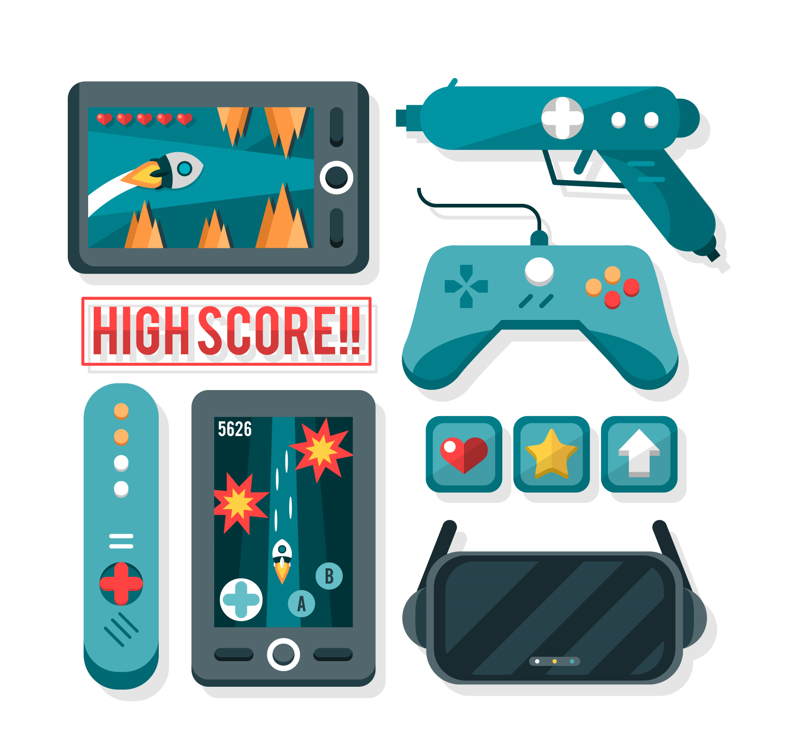

Comme vous venez de le lire la nouvelle saison de Fortnite chapitre 2 vient de sortir. Elle réunit les héros de nos films Marvel préféré dans le jeu afin de combattre un grand méchant bien connu des fans de comics. Nous voilà arrivé à la 15ème saison du jeu, est-ce-que la hype Fortnite va-elle continuer à vivre au sein de cette saison ? Vous voudriez sûrement que je réponde brièvement à cette question mais ce n'est pas mon but.
J'aimerai plutôt que nous réfléchissions à un problème lié à cette grande hype autour du jeu et aux jeux vidéo généralement consommés en tant que service. Ce problème est plus précisément Est-ce-que Fortnite (et le jeux vidéo en général) polluent. Et si oui, est-il possible alors de réduire la pollution engendrée par nos sessions de jeux. Pour cela vous avez à disposition 3 grands axes à votre disposition:

Un ensemble de 2 jeux de style très différents. De rien au phénomène de mode, quelle est son histoire ?

Comment est-ce possible que le fait de jouer sur au jeu video en ligne, amène a une pollution , tout est virtuel pourtant ?

Serait-ce possible de jouer sans polluer. Ou si cela est impossible, de jouer uniquement en diminuant la pollution engendré par sa consommation ?